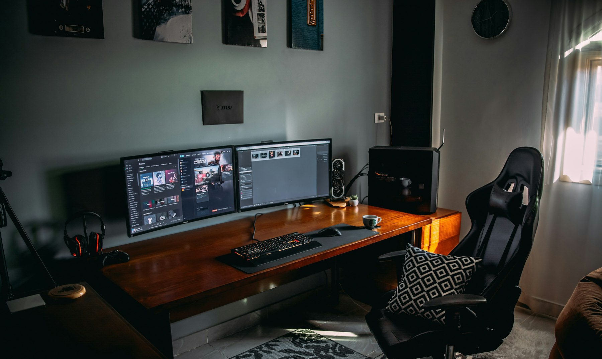

TL;DR
This article offers a practical, budget-friendly marketing plan template for solo service providers facing financial constraints.
By implementing clear steps and avoiding common pitfalls, freelancers can effectively attract clients without overspending.
Target Audience: Who Benefits Most
This setup is for solo service providers—freelancers or entrepreneurs who offer specialized services and work independently.
These individuals often juggle multiple roles, from service delivery to client relations, while managing their marketing efforts on a shoestring budget.
A primary challenge for these providers is allocating limited financial resources to marketing without sacrificing quality.
They need a practical strategy tailored to their circumstances: sustainable, scalable, and sufficient to attract clients without the burden of overspending.
Why Conventional Marketing Advice Falls Short
Generic marketing advice often leans heavily on expensive strategies that can easily lead to disappointment for freelancers.
For instance, large-scale advertising campaigns, professional-grade branding, or high-priced agency services simply aren't viable for those with limited budgets.
These approaches fail because they don't account for the unique constraints faced by solo providers, who require tailored solutions that fit both their financial and operational capacities.
This emphasis on traditional, costly methods creates a barrier that many freelancers cannot overcome, rendering them ineffective.
Visualizing the Marketing Workflow
Understanding your marketing workflow is critical to successfully navigate the complexities of promoting freelance services.
Start with a clear, step-by-step diagram that outlines your marketing actions—from identifying your target client to engaging them through various channels.
A simplified workflow could look as follows: Research your market → Define your messaging → Select your outreach methods → Evaluate your results.
Employ free or low-cost tools like Google Analytics for performance tracking or Canva for your design needs.
This streamlined approach enhances clarity and efficiency, ensuring that each action contributes to your overarching goal of securing clients.
Steps to Set Up Your Budget-Friendly Plan
To lay the groundwork for your marketing plan, follow these essential steps: First, precisely identify your target clients—demographics, needs, and pain points.
This helps create a clear marketing focus.
Next, craft a basic yet compelling marketing message that highlights your unique value proposition.
Use this message consistently across all platforms.
Third, establish a modest online presence through a free website builder or social media channels.
Regularly evaluate your outcomes to ensure your efforts align with your goals.
Each of these steps is designed to reduce costs while still making an impactful impression on potential clients.
Choosing Tools and Making Decisions
When selecting tools for your marketing plan, prioritize affordability and ease of use.
Start by assessing your unique needs—do you require a simple email marketing solution, a project management tool, or design software?
Look for platforms offering free tiers or pay-as-you-go options, like Mailchimp for email marketing or Trello for task management.
Your decision criteria should include ease of integration into your workflow and the ability to grow with your needs.
Avoid tools that lock you into long-term commitments, as flexibility can be crucial for adjusting your strategy as you learn what works best.

Avoiding Common Mistakes and Tradeoffs
Freelancers often fall into two significant pitfalls: overextending their budgets on ineffective marketing efforts and failing to adapt their strategies based on feedback.
It's essential to regularly gauge your marketing's effectiveness and be prepared to pivot.
Additionally, consider the tradeoff between quality and cost; while low-cost tools may seem attractive, they could save you money at the expense of professional appearance or outreach effectiveness.
Understanding these common mistakes will bolster your marketing efforts and help maximize the returns on your limited budget.
Final Checklist: Your Marketing Plan Template
Wrap up your marketing plan with this comprehensive checklist: 1) Have I identified my target audience? 2) Is my marketing message clear and aligned with my value proposition? 3) Am I using cost-effective tools that meet my needs? 4) Have I outlined a schedule for evaluating results? 5) Can I adjust this plan as I learn more about my market?
This checklist serves as a practical guide for ensuring all aspects of your plan are covered.
However, do not use this setup if your service relies on large-scale traditional marketing efforts—this template is specifically tailored for freelancers who thrive on personal connections and niche outreach.
FAQ
What if I have no marketing experience?
Start small by focusing on understanding your target audience and crafting a clear value proposition. Utilize free online resources and tutorials to learn about basic marketing principles.
How do I know if my budget is too limited for effective marketing?
Evaluate the essential marketing activities that will yield a return on investment. If your budget prevents you from implementing foundational strategies, consider refining your focus or increasing your budget incrementally.
Can I adjust my plan as I go?
Absolutely! Flexibility is key in freelance marketing. Be prepared to pivot your strategies based on feedback and results.
What tools are essential for my marketing plan?
Essential tools typically include a website builder, a social media platform that fits your clientele, and a simple email marketing service. Focus on tools that allow for low-cost entry.
Search more articles
Find related tools, workflows, and guides.
Photo credits
- Photo 1: Eric Tompkins on Unsplash (https://unsplash.com/@erictompkins) (https://unsplash.com/photos/service-24-hours-neon-sigange-g3ag5r0NKWM)
- Photo 2: Campaign Creators on Unsplash (https://unsplash.com/@campaign_creators) (https://unsplash.com/photos/white-printing-paper-with-marketing-strategy-text-yktK2qaiVHI)
- Photo 3: Hanna Morris on Unsplash (https://unsplash.com/@hcmorr) (https://unsplash.com/photos/sign-illustration-_XXNjSziZuA)
- Photo 4: UX Indonesia on Unsplash (https://unsplash.com/@uxindo) (https://unsplash.com/photos/person-in-gray-shirt-holding-white-printer-paper-w00FkE6e8zE)
- Photo 5: Duncan Kidd on Unsplash (https://unsplash.com/@we_the_royal) (https://unsplash.com/photos/silver-macbook-near-camera-lens-fniDT9K7rkw)
- Photo 6: Amr Taha™ on Unsplash (https://unsplash.com/@amr_taha) (https://unsplash.com/photos/computer-set-on-desk-H8HbgvlwN8Q)
- Photo 7: Kelly Sikkema on Unsplash (https://unsplash.com/@kellysikkema) (https://unsplash.com/photos/a-person-holding-a-notebook-with-a-pencil-next-to-it-MBr12sVO_P8)